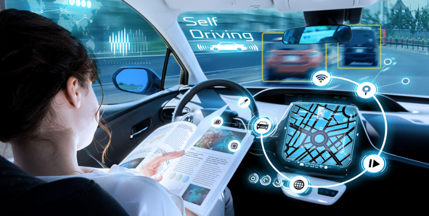

Autonomous Vehicles
Sibel Jasar
What does it do?
An autonomous vehicle is a vehicle that is capable of driving and operating on its own without any human involvement. It is a form of artificial intelligence making it state of the art, because this technology can think and function on its own. Within the last five years, the idea of self driving cars has gone from being a concept of fantasy to a concept that is already being implemented and seen on the roads today. There are five levels of automation . Level 0, as the number suggests, means no automation. This is the category of everyday, normal cars that the majority of the driving population drive today. Level 1 involves driver assistance, with features such as cruise control which has been around for a very long time. Level 2 is similar to cruise control but an extra step forward in the automation of driving. It assists in controlling car speed and steering, and keeping distance between cars in traffic. Examples of this are seen in Tesla Autopilot, Audi Traffic Jam Assist and Volvo’s Pilot Assist. Conditional automation is level 3, meaning that the vehicle can drive itself in only ideal and simple conditions and still requires the drivers attention. Level 4 offers advanced automation and little work by the driver. Level 5 is full vehicle automation and the level that is being worked toward and achieved (TrueCarAdvisor 2018).
In 2009, Google launched its self-driving car project named Waymo, and within 18 months they had built a system that could positively handle tough roads in California. San Francisco’s Lombard Street is well known for its curvy zig zag like pattern decorated with flowers and hedges, and the vehicle was able to maneuver the road without issue, for further details see (Alex, D 2018). Years later, Elon Musk announced his own electrically powered, clean energy car with a self-driving system, the Tesla. Tesla’s were on the roads by 2016 and sales have increased dramatically since then. The Tesla can drive itself on freeways and other roads, slowing down, switching lanes and breaking when needed. The Tesla is an example of level 3 or 4 automation. Videos went viral on YouTube of people doing their makeup on the freeway in their Tesla and started a ‘Tesla Get Ready With Me’ challenge. Elon Musk says “It’s almost getting to a point where I can go from my house to work with no interventions despite going through construction and widely varying situations. So this is why I’m very confident about its Full Self-Driving functionality being complete by the end of this year. It’s because I’m literally driving it”.(Tim, M 2020) The Tesla also has a “Smart Summon” feature where the car drives to your location from wherever it has been parked, with a simple click of a button. This feature is especially helpful for those who forget where they park and is the closest to almost full automation considering the car has no driver inside, turns on and drives to where it has been summoned.
Musk said “I remain confident that we will have the basic functionality for level 5 autonomy complete this year”.(Brenda, G & Yilei, S 2020) predicting that his company will have fully autonomous vehicles (level 5) in their product line by the end of 2020 according to (John 2020), or 2021 latest. At the opening of Shanghai’s annual World Artificial Intelligence Conference (WAIC) Musk stated “I’m extremely confident that level 5 or essentially complete autonomy will happen and I think will happen very quickly”.(Brenda, G & Yilei, S 2020) Along with Elon Musk’s promises of a fully autonomous Tesla vehicle, on June 25 2020, Waymo announced its partnership with car brand Volvo to integrate their self-driving system technology into Volvo’s vehicles. According to (TrueCarAdvisor 2018) a study also predicted that by the year 2040, 4 out of every 10 vehicles on the road will be autonomous.
What is the likely impact?
Because autonomous vehicles won’t require human interaction, and will be able to sense their environment and make driving decisions on its own, morals are being tested. Individuals will be entrusting their own lives, as well as the lives of passengers and the general public, to an artificially intelligent robot. This brings the train scenario to life; where 5 people are on one track and only one person is on the other, and a choice must be made on which track the train should pass on and which lives should be sacrificed. Complex real life driving and road scenarios are being thoroughly thought out and tested to ensure that the autonomous vehicle makes the right decision resulting in most lives being saved. Usually, the passengers' lives are prioritised, but this raises the issue of risking other’s lives to protect those inside the vehicle, illustrating the difficult and morally challenging decisions that must be considered and the autonomous vehicle’s company held accountable for when designing such a vehicle.
This can potentially backfire on the company if one of their autonomous vehicles were to react in a way that is not agreed with and accepted by the public. The company could be sued by its consumers and held under legal obligation of the lives endangered and lost. A solution would be to have a customer/client agreement and consent form filled out and signed upon purchase of the autonomous vehicle that claims the company is not responsible for any damages caused. According to (Paisley, H n.d.) around 1.2 million lives are lost in traffic accidents every year and even partial driving automation can reduce this number significantly. So, although so much emphasis is put on what decisions the car should make based on the lives at risk, having more autonomous vehicles on the road would mean that driving risks would almost be eliminated. If the majority of vehicles on the roads are autonomous and driving with calculated safety, road safety would dramatically increase because impatient and dangerous drivers are now no longer controlling the wheel, the car itself is.
How will this affect you?
I would love to see autonomous vehicles on the road and even be inside one to experience what artificial intelligence is capable of doing. As interested in the idea as I am, I do not see myself trusting a robot to drive me everywhere I need to go, however my opinion could potentially change if self-driving vehicles were the new ‘normal’. I also enjoy driving, so I am not very interested in owning my own fully autonomous vehicle. With everyone driving fully safe and autonomous vehicles, poses the idea that street racing would become a redundant and extinct activity. Modifying cars and doing skids and burnouts is a hobby for a lot of the population, especially for younger drivers who like to be reckless and ‘cool’. Although these activities are dangerous and illegal, you cannot stop reckless individuals from doing it secretly.
If cars are fully autonomous, it is possible that people will no longer be able to partake in such activities, which will most likely have a positive impact in the safety of our roads but also take a hobby away from others. Additionally, a concern I have for the future of driving is that people will no longer be learning how to drive considering cars can flawlessly operate on their own, removing a skill that I see as quite important to have. But yet again, if it is no longer needed and we as humans have revolutionised in such technology, then it shouldn’t be an issue. The fact that the number of traffic and driving related deaths being greatly reduced with self driving vehicles creating a safer road environment makes me think positively about the future road environment and conditions, despite the potential effects of learning how to drive and racing activities being made redundant. At the development rate we are currently seeing, it is highly possible that in my lifetime I will be seeing fully autonomous vehicles on the road, like the study said where 4 out of 10 cars are predicted to be autonomous.
The vehicles will most likely be very expensive upon first years of release, meaning that a lot of the general public, as well as myself, will most likely be unable to afford one. And as mentioned prior, I don’t see myself purchasing one because I enjoy driving. I see autonomous vehicles being very helpful for the older generation, like my grandparents, that have many conditions such as poor eyesight, slow reflexes and arthritis etc. This way they can get to where they need to go without having to drive the car themselves and will greatly assist them in their daily lives. I also see it being helpful for my family friend who has a permanently injured leg, as it will take the strain of driving off completely. Another reason would be for those who drive to an event and end up drinking more than they had planned, without them having to drive home under the influence or leave their car stranded wherever it is and Uber home.
References:
TrueCarAdvisor 2018, ‘The Five Levels Of Autonomous Vehicles’, TrueCarAdvisor, 5 March, viewed 5 September 2020,
John, M 2020, ‘Autonomous cars: five reasons they still aren’t on our roads’, The Conversation, 30 July, viewed 5 September 2020,
accenturedigital n.d., ‘THE ERA OF AUTONOMOUS VEHICLES IS HERE’, accenturedigital, viewed 5 September 2020,
Alex, D 2018, ‘The WIRED Guide to Self-Driving Cars’, WIRED, 13 December, viewed 5 September 2020,
Waymo, 2020, ‘We’re Building The Worlds Most Experienced Driver’, Waymo, viewed 5 September 2020,
Tesla, 2020, ‘Future of Driving’, Tesla, viewed 5 September 2020,
Tim, M 2020, ‘Why Elon Musk’s autonomous driving ideas don’t worry insurers’, CNBC, 25 July, viewed 5 September 2020,
Brenda, G & Yilei, S 2020, ‘Tesla 'very close' to level 5 autonomous driving technology, Musk says’, Reuters, 9 July, viewed 5 September 2020,
Paisley, H n.d., ‘3 Amazing Benefits Of Driverless Cars That You May Have Never Imagined’, Lifehack, viewed 6 September 2020, <3 Amazing Benefits Of Driverless Cars That You May Have Never Imagined>